Industry 4.0 (or Industrie 4.0) comes with many names: The Fourth Industrial Revolution, 4IR, Smart Factory, Industrial IoT (IIoT), Intelligent Factory of the Future. Which all aims to describe shaping the future of production, with potential to totally transform the way we manufacture goods and interact with our built, and natural environment.
“Industrie 4.0” is an idea that emanated from a German consortium. It is a term used to describe a variety of innovative technologies and processes that seeks to shape the future of production by creating more intelligent production systems. The term “fourth Industrial Revolution” was introduced to the world by the founder of the World Economic Forum (WEF) – Klaus Schwab, who defined it as:
“An era marked by a technological revolution that is blurring the lines between the physical, digital and biological spheres.”
Before we go further discussing the fourth industrial revolution, let’s talk a bit about the previous generation of production systems and the various ways the manufacturing industry has reinvented itself.
So far, we have had 3 major industrial revolutions before this. With each of them bringing along with it, a significant change as a result of discoveries of new technology.
The Industrial Revolution
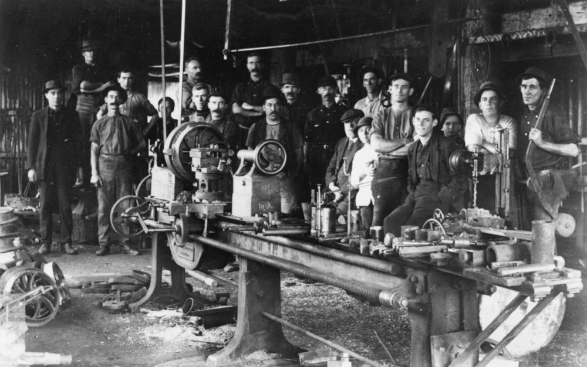 An early industrial factory
The industrial revolution (also known as the first industrial revolution) marked a period of development in the latter half of the 18th century that transformed rural societies in Europe and America into industrialized, urban ones. A key feature of the industrial revolution was the population shift –A move of the manufacturing of goods from small shops to large factories which led to a shift that brought about the changes in culture, as people moved from rural areas to big cities in order to work.
The First Industrial Revolution
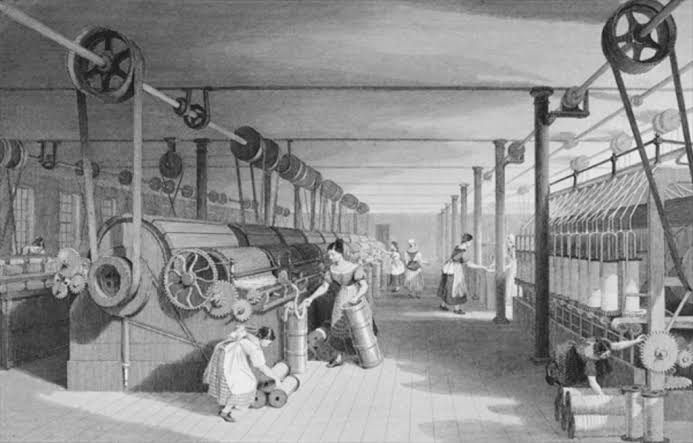 Early textile manufacturing driven by steam powered engines
Fuelled by the game-changing use of steam power, the industrial revolution began in Britain around 1760 and then was spread through Europe and North America by the 1830's and ‘40s. This was driven by the discovery that we could harness the power of steam to perform work. It was powered by a major invention –The Steam Engine. And at the end of the 18th century, the first steam engines and hydro powered systems were used, which brought about the first mechanized production system powered by steam and water. This led to the creation of factories and a massive boom in the textile industry.
The Second Industrial Revolution
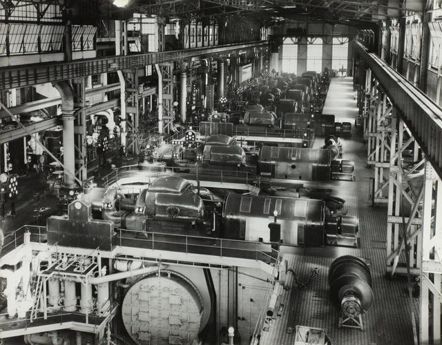 An Auto assembly line
In the late 1800's the second industrial revolution was marked by mass-production. This was introduced when electricity was discovered and then mass-production became the new method of production requiring high labour and electrical energy. The first assembly lines and conveyor system was used during this period and new industries such as steam, oil, and electricity were developed. 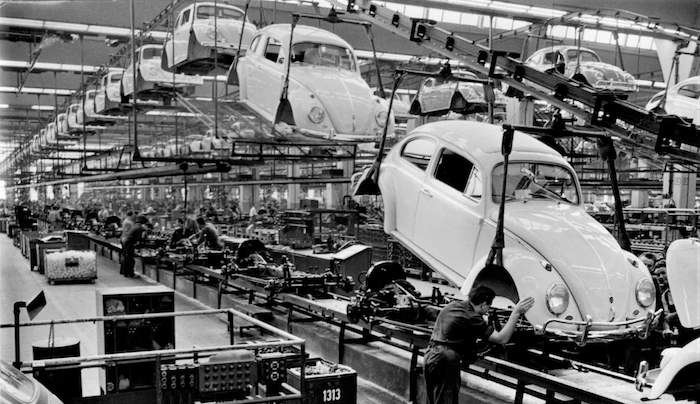 An assembly line
The Third Industrial Revolution
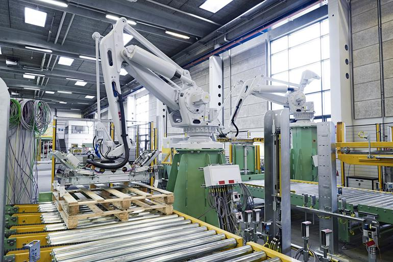 An automated manufacturing system
Also known as the “digital revolution”, the third industrial revolution occurred in the second half of the 20th century, around 1970 and was ushered in by the introduction of computers and the internet. Electronics and I.T began to expand rapidly into industries. This gave rise to automation of industrial processes using industrial computers and controllers (computer assisted controls). An integration of information technology into factory automation. 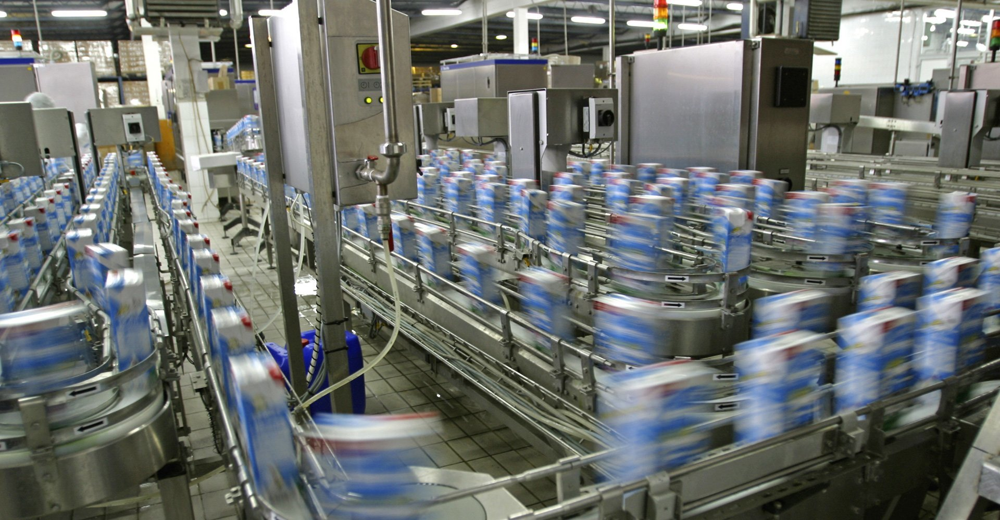 An automated factory line
The Fourth Industrial Revolution
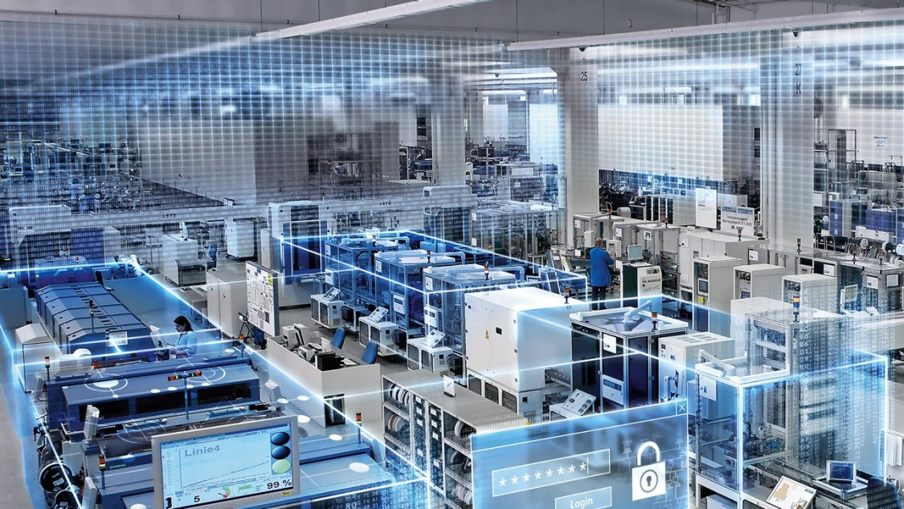 Hyper-connected digital manufacturing floor
Industry 4.0 or the fourth industrial revolution is ushering us into a new era of industrial production, which is gradually finding its way into many industries in global economies. Now we are in the early stages of the fourth industrial revolution, which is bringing about a change in the way we produce and consume products and services. It encompasses a complete restructuring of production processes, transforming analog and centralized processes into digital decentralized production processes.
The fourth industrial era is an internet driven, self-controlling, and sensor aided production systems based on cyber-physical systems. It is an intelligent, flexible and dynamic production system, where machinery and equipment will have the ability to improve processes through: self-optimization and autonomous decision making.
It would also bring about a production ecosystem where raw materials to be transformed into products, and machines are interconnected within the internet of things giving rise to a more flexible, connected production system, globally connecting value chains across companies.
Industry 4.0 promises to drive the creation of solutions that would make work on the production floor a lot easier.
 Connected systems
Connected systems
Cyber-Physical Systems
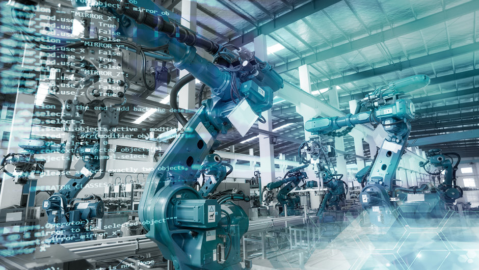 Cyber-physical system
Industry 4.0 is based on the idea of systems known as cyber-physical systems (CPS), which are systems made of connected devices, machines and materials in a comprehensive network where they are duly equipped with sensors and communication technology and are connected to each other and to the internet, communicating and controlling each other cooperatively.
Cyber-physical systems consists of smart machines, and production facilities, capable of autonomously exchanging data and information, controlling each other independently.
Cyber-physical systems are going to be the drivers of future intelligent production lines that result in intelligent production and they are incorporated with enabling technologies such as: IoT, cloud technology, big data and A.I. Everything becomes interconnected, instrumented and intelligent. This would greatly improve automation, communication and use of real-time data.
Through the internet of things (IoT), man, machines and products will connect and communicate with each other. And in doing so, generate a lot of data that can be harvested and translated into useful information. This would eventually help industries become more resource efficient and customer oriented.
Industry 4.0 Features & Key Design Principles
The Intelligent / smart factory is no longer just a theory. The practice is now heavily being applied in many industries creating new solutions to some of the toughest challenges that were previously faced in the respective industries.
At the heart of Industry 4.0, the industrial internet drives the transformation taking full advantage of digitization. Connectivity, data and information transparency is key to implementing Industry 4.0 – Making relevant data available at any time, providing actionable data to help fine-tune performance for greater reliability. With the fusion of data analytic techniques and acquired data from smart sensors, new insights will be gained concerning running processes, and asset health including preventive maintenance solutions because machine health will be a key concern.
Main features of Industry 4.0 include:
- Distributed Intelligence and control (decentralization)
- Interoperability of linked, connected and collaborative systems
- Real-time capabilities
- Virtualization of plant floor and simulation of processes
- Connectivity across entire supply chains not just the factory floor
- Flexible, modular, reconfigurable systems
In summary: flexibility, collaboration, communication and digitization will define industry 4.0. Allowing systems to operate quickly, flexibly and cost-effectively from product planning up to production and logistics. This would make product life-cycle become shorter, improve production quality and result in larger product variance and more data driven services.
The Pillars of the Fourth Industrial Revolution
-
Advanced Simulations, Virtual and Augmented Reality (VR / AR)

With the use of computer generated images and objects, we can gain access to full digital environments (Virtual reality) or have these generated images superimposed on our physical reality (Augmented reality). These serve as a meeting point for the physical and digital worlds which could be used to test out various scenarios without actually having the real thing in place. These can save both cost and time and prevent loss of materials in testing. Visualization and forecasting of scenarios can now be utilized and this helps in cost control.
-
Digital Fabrication / 3D Printing / Additive Manufacturing 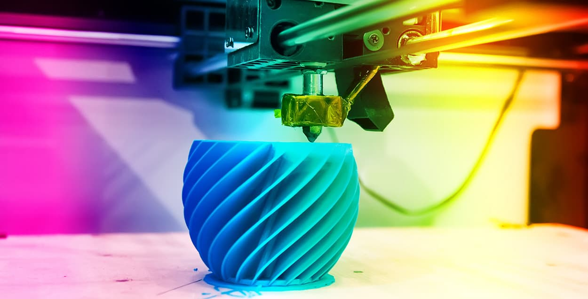
3D printing or additive manufacturing as it is sometimes called, is a process of producing objects by creating 3D design of the item with some form of computer-aided-design software, and then printing them out with the help of 3D printers. It saves material by starting production from nothing, and then building them up layer by layer instead of the traditional cutting away of excess material to gain the desired shape or form. This gives us unlimited design flexibility.
-
Autonomous Systems 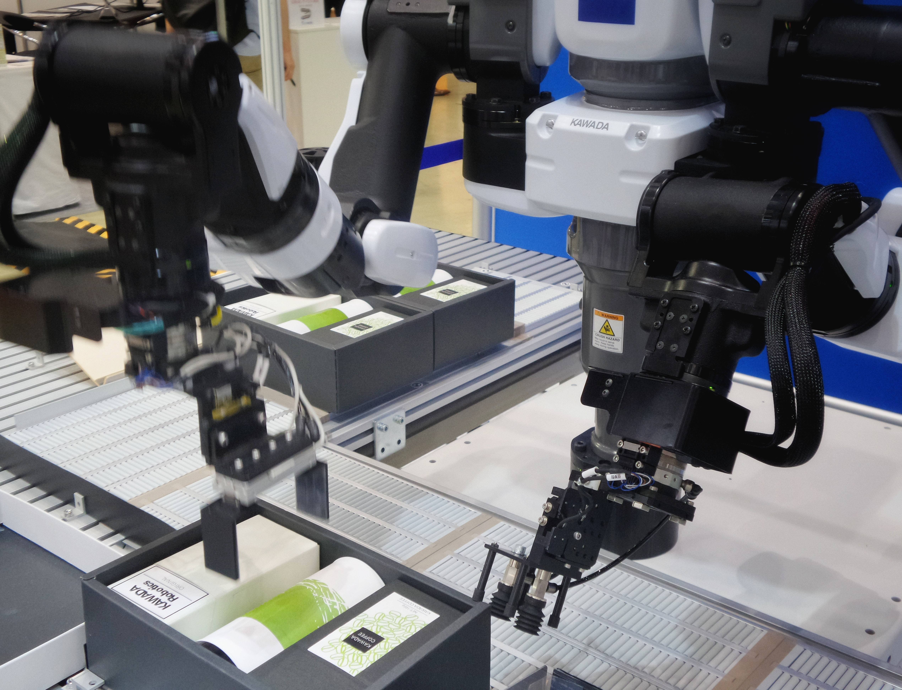
From autonomous robots to self-driving cars, the idea of machines learning and thinking for themselves is slowly becoming a reality. Through machine learning and AI, systems can now be programmed to think, act and react to situations on their own. This has given rise to collaborative robots (cobots) and autonomous machines.
-
Cloud Computing
This is the use of remote computing resources delivered over the internet to manage, store and process data. Cloud computing is now becoming widely accepted as the new norm for consuming I.T resources in a rented OpEx (operational expenditure) model. Meaning you only have to rent and pay for what you need as against buying the entire thing as was traditionally used before. When we talk of cloud computing, we not only refer to the Cloud solutions offered by top cloud service providers such as: Amazon AWS, Microsoft Azure or Google Cloud. It can also mean a set up architecture that allows I.T resources to be put together, and then delivered through the internet to help manage, store and process data.
-
Big Data Analytics

This refers to the management of larger amounts of data which results from the introduction of digitization of things. Big data can be characterized by what is called the 3 V’s:
I. Velocity: This refers to the very high speed of data generation and consumption
II. Volume: This refers to the very large amount of data that are generated
III. Variety: This refers to the numerous kinds of data being generated (image data, video data, system log data etc.)All these characteristics of big data makes it impossible for normal computing resources to handle. Therefore the need for specialized systems and big data applications. It involves mining and pattern discovery in large sets of data to identify useful information from them. It also uses techniques like: predictive analytics, statistical algorithms and machine learning on both stored historical data and in-memory real-time system data to gain immediate insights to make better decisions and identify possible future outcomes.
-
Internet of Things (IoT) 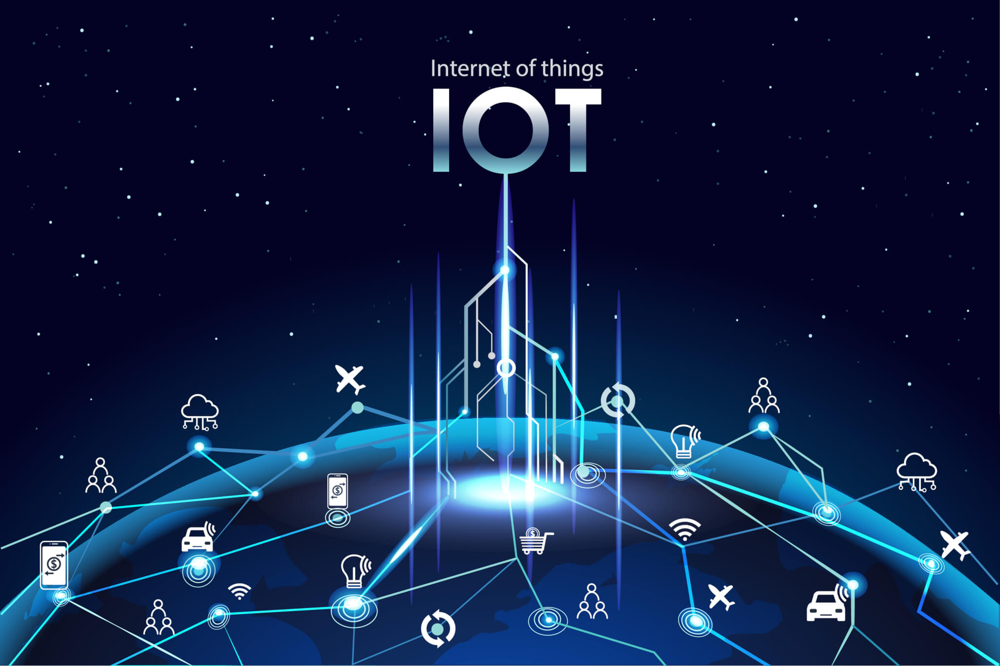
This lies at the very heart of Industry 4.0, seeing that the goal of industry 4.0 is tied around system connectivity allowing communication between various systems from across production lines and beyond. This helps to ensure that everything runs autonomously and smoothly. Industry 4.0 will be made up of ubiquitous network of things and systems through sensor and communication technology enabling real-time tracking
As a result of this, cyber-security becomes an important factor. Industry 4.0 can’t successfully be achieved without connections and networks that are: vigilant, secure and resilient.
-
Artificial Intelligence (A.I) 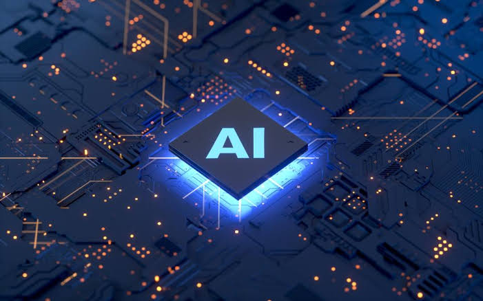
A.I refers to the process of giving computers and systems cognitive abilities. In other words, it means giving computers the ability to carry out tasks which would normally require human intelligence. It is gradually finding its way into every sector we can think of, and its applications are simply limitless. The fourth industrial revolution also leverages the power of A.I in producing smarter systems. Through machine learning and deep learning these connected systems can be programmed to harness the power of the data generated to train themselves to begin to carry out complex tasks and therefore become more autonomous.
Taking up this technological opportunity, the emerging economies of the future will become more digital and more global. And Industry 4.0 is taking place as a revolution to move industries across the world towards this future.
Through the internet of things and digitalization, we would be able to produce:
- Connected Manufacturing Systems
- Connected Transportation Systems
- Connected Defence and Security Systems
- Connected Agriculture and Food Services
- Connected Infrastructures and Smart Homes
- Connected Retail, Logistics and Utilities
- Connected Health Care Systems
Outside of manufacturing and production, other sectors of the economy to potentially benefit from this new revolution include:
- Aerospace
- Defence and Security
- Chemical and Process Industries
- Engineering and Construction
- Mining and Metals
- Agriculture and Food Services
- Automotive, Transportation and Logistics
- Health care and Pharmaceuticals